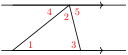
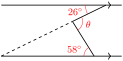
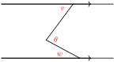

Section 1.1 Angles and Triangles
Historically, trigonometry began as the study of triangles and their properties. Let's review some definitions and facts from geometry.
We measure angles in degrees.
One full rotation is \(360\degree\text{,}\) as shown below.
Half a full rotation is \(180\degree\) and is called a straight angle.
One quarter of a full rotation is \(90\degree\) and is called a right angle.
Subsection Triangles
If you tear off the corners of any triangle and line them up, as shown below, they will always form a straight angle.
Sum of angles in a triangle.
1. The sum of the angles in a triangle is \(180\degree\text{.}\)
Example 1.1.
Two of the angles in the triangle at right are \(25\degree\) and \(115\degree\text{.}\) Find the third angle.
To find the third angle, we write an equation.
The third angle is \(40\degree\text{.}\)
Checkpoint 1.2.
Find each of the angles in the triangle at right.
\(x=39\degree,~~2x=78\degree, ~~2x-15=63\degree\)
Some special categories of triangles are particularly useful. Most important of these are the right triangles.
Right triangle.
2. A right triangle has one angle of \(90\degree\text{.}\)
Example 1.3.
One of the smaller angles of a right triangle is \(34\degree\text{.}\) What is the third angle?
The sum of the two smaller angles in a right triangle is \(90\degree\text{.}\) So
The unknown angle must be \(56\degree\text{.}\)
Checkpoint 1.4.
Two angles of a triangle are \(35\degree\) and \(45\degree\text{.}\) Can it be a right triangle?
No
An equilateral triangle has all three sides the same length.
Angles of equilateral triangle.
3. All of the angles of an equilateral triangle are equal.
Example 1.5.
All three sides of a triangle are 4 feet long. Find the angles.
The triangle is equilateral, so all of its angles are equal. Thus
Each of the angles is \(60\degree\text{.}\)
Checkpoint 1.6.
Find \(x\text{,}\) \(y\text{,}\) and \(z\) in the triangle at right.
\(x=60\degree, ~y=8, ~z=8\)
An isosceles triangle has two sides of equal length. The angle between the equal sides is the vertex angle. The other two angles are the base angles.
Base angles of an isosceles triangle.
4. The base angles of an isosceles triangle are equal.
Example 1.7.
Find \(x\) and \(y\) in the triangle at right.
The triangle is isosceles, so the base angles are equal. Therefore, \(y=38\degree\text{.}\) To find the vertex angle, we solve
The vertex angle is \(104\degree\text{.}\)
Checkpoint 1.8.
Find \(x\) and \(y\) in the figure at right.
\(x=140\degree,~y=9\)
Subsection Angles
In addition to the facts about triangles reviewed above, there are several useful properties of angles.
Two angles that add to \(180\degree\) are called supplementary.
Two angles that add to \(90\degree\) are called complementary.
Angles between \(0\degree\) and \(90\degree\) are called acute.
Angles between \(90\degree\) and \(180\degree\) are called obtuse.
Example 1.9.
In the figure at right,
\(\angle\)\(AOC\) and \(\angle\)\(BOC\) are supplementary.
\(\angle\)\(DOE\) and \(\angle\)\(BOE\) are complementary.
\(\angle\)\(AOC\) is obtuse,
and \(\angle\)\(BOC\) is acute.
In trigonometry we often use lower-case Greek letters to represent unknown angles (or, more specifically, the measure of the angle in degrees). In the next Exercise, we use the Greek letters \(\alpha\) (alpha), \(\beta\) (beta), and \(\gamma\) (gamma).
Checkpoint 1.10.
In the figure, \(\alpha\text{,}\) \(\beta\text{,}\) and \(\gamma\) denote the measures of the angles in degrees.
Find the measure of angle \(\alpha\text{.}\)
Find the measure of angle \(\beta\text{.}\)
Find the measure of angle \(\gamma\text{.}\)
What do you notice about the measures of the angles?
\(\alpha=130\degree, ~\beta=50\degree, ~\gamma=130\degree.\) The non-adjacent angles are equal.
Non-adjacent angles formed by the intersection of two straight lines are called vertical angles. In the previous exercise, the angles labeled \(\alpha\) and \(\gamma\) are vertical angles, as are the angles labeled \(\beta\) and \(50\degree\text{.}\)
Vertical Angles.
5. Vertical angles are equal.
Example 1.11.
Explain why \(\alpha=\beta\) in the triangle at right.
Because they are the base angles of an isosceles triangle, \(\theta\) (theta) and \(\phi\) (phi) are equal. Also, \(\alpha=\theta\) because they are vertical angles, and similarly \(\beta=\phi\text{.}\) Therefore, \(\alpha=\beta\) because they are equal to equal quantities.
Checkpoint 1.12.
Find all the unknown angles in the figure at right. (You will find a list of all the Greek letters and their names at the end of this section.)
\(\alpha=40\degree,~ \beta=140\degree,~ \gamma=75\degree, \delta=65\degree\)
A line that intersects two parallel lines forms eight angles, as shown in the figure below. There are four pairs of vertical angles, and four pairs of corresponding angles, or angles in the same position relative to the transversal on each of the parallel lines.
For example, the angles labeled 1 and 5 are corresponding angles, as are the angles labeled 4 and 8. Finally, angles 3 and 6 are called alternate interior angles, and so are angles 4 and 5.
Paralles lines cut by a transversal.
6. If parallel lines are intersected by a transversal, the alternate interior angles are equal. Corresponding angles are also equal.
Example 1.13.
The parallelogram \(ABCD\) shown at right is formed by the intersection of two sets of parallel lines. Show that the opposite angles of the parallelogram are equal.
Angles 1 and 2 are equal because they are alternate interior angles, and angles 2 and 3 are equal because they are corresponding angles. Therefore angles 1 and 3, the opposite angles of the parallelogram, are equal. Similarly, you can show that angles 4, 5, and 6 are equal.
Checkpoint 1.14.
Show that the adjacent angles of a parallelogram are supplementary. (You can use angles 1 and 4 in the parallelogram of the previous example.)
Note that angles 2 and 6 are supplementary because they form a straight angle. Angle 1 equals angle 2 because they are alternate interior angles, and similarly angle 4 equals angle 5. Angle 5 equals angle 6 because they are corresponding angles. Thus, angle 4 equals angle 6, and angle 1 equals angle 2. So angles 4 and 1 are supplementary because 2 and 6 are.
Note 1.15.
In the Section 1.1 Summary, you will find a list of vocabulary words and a summary of the facts from geometry that we reviewed in this section. You will also find a set of study questions to test your understanding, and a list of skills to practice in the homework problems.
| Greek Alphabet | ||
| \(\alpha~~~~\text{alpha}\) | \(\beta~~~~\text{beta}\) | \(\gamma~~~~\text{gamma}\) |
| \(\delta~~~~\text{delta}\) | \(\epsilon~~~~\text{epsilon}\) | \(\gamma~~~~\text{gamma}\) |
| \(\eta~~~~\text{eta}\) | \(\theta~~~~\text{theta}\) | \(\iota~~~~\text{iota}\) |
| \(\kappa~~~~\text{kappa}\) | \(\lambda~~~~\text{lambda}\) | \(\mu~~~~\text{mu}\) |
| \(\nu~~~~\text{nu}\) | \(\xi~~~~\text{xi}\) | \(o~~~~\text{omicron}\) |
| \(\pi~~~\text{pi}\) | \(\rho~~~~\text{rho}\) | \(\sigma~~~~\text{sigma}\) |
| \(\tau~~~~\text{tau}\) | \(\upsilon~~~~\text{upsilon}\) | \(\phi~~~~\text{phi}\) |
| \(\chi~~~\text{chi}\) | \(\psi~~~\text{psi}\) | \(\omega~~~\text{omega}\) |
Review the following skills you will need for this section.
Algebra Refresher 1.2.
Solve the equation.
1. \(x-8=19-2x\vphantom{\dfrac{1}{2}}\)
3. \(13x+5=2x-28\)
2. \(2x-9=12-x\vphantom{\dfrac{1}{2}}\)
4. \(4+9x=-7+x\)
Solve the system.
5. \(\begin{aligned}[t] 5x-2y\amp =-13 \amp \amp \\ 2x+3y\amp =-9 \amp \amp \\ \\ \end{aligned}\)
6. \(\begin{aligned}[t] 4x+3y\amp =9 \amp \amp \\ 3x+2y\amp =8 \amp \amp \\ \end{aligned}\)
\(\underline{\qquad\qquad\qquad\qquad}\)
Algebra Refresher Answers
\(\displaystyle 9\)
\(\displaystyle 2\)
\(\displaystyle -3\)
\(\displaystyle -2\)
\(\displaystyle x=-3,y=-1\)
\(\displaystyle x=6, y=-5\)
Subsection Section 1.1 Summary
Subsubsection Vocabulary
Right angle
Straight angle
Right triangle
Equilateral triangle
Isosceles triangle
Vertex angle
Base angle
Supplementary
Complementary
Acute
Obtuse
Vertical angles
Transversal
Corresponding angles
Alternate interior angles
Subsubsection Concepts
Facts from Geometry.
1. The sum of the angles in a triangle is \(180\degree\text{.}\)
2. A right triangle has one angle of \(90\degree\text{.}\)
3. All of the angles of an equilateral triangle are equal.
4. The base angles of an isosceles triangle are equal.
5. Vertical angles are equal.
6. If parallel lines are intersected by a transversal, the alternate interior angles are equal. Corresponding angles are also equal.
Subsubsection Study Questions
Is it possible to have more than one obtuse angle in a triangle? Why or why not?
Draw any quadrilateral (a four-sided polygon) and divide it into two triangles by connecting two opposite vertices by a diagonal. What is the sum of the angles in your quadrilateral?
What is the difference between a vertex angle and vertical angles?
Can two acute angles be supplementary?
Choose any two of the eight angles formed by a pair of parallel lines cut by a transversal. Those two angles are either equal or _______ .
Subsubsection Skills
Practice each skill in the Homework Problems listed.
Sketch a triangle with given properties #1–6
Find an unknown angle in a triangle #7–12, 17–20
Find angles formed by parallel lines and a transversal #13–16, 35–44
Find exterior angles of a triangle #21–24
Find angles in isosceles, equilateral, and right triangles #25–34
State reasons for conclusions #45–48
Exercises Homework 1.1
Exercise Group.
For Problems 1–6, sketch and label a triangle with the given properties.
1.
An isosceles triangle with vertex angle 30°
2.
A scalene triangle with one obtuse angle (Scalene means three unequal sides.)
3.
A right triangle with legs 4 and 7
4.
An isosceles right triangle
5.
An isosceles triangle with one obtuse angle
6.
A right triangle with one angle 20°
Exercise Group.
For Problems 7–20, find each unknown angle.
7.
8.
9.
10.
11.
12.
13.
14.
15.
16.
17.
18.
19.
20.
Exercise Group.
In Problems 21 and 22, the angle labeled \(\phi\) is called an exterior angle of the triangle, formed by one side and the extension of an adjacent side. Find \(\phi\text{.}\)
21.
22.
23.
In parts (a) and (b), find the exterior angle \(\phi\text{.}\)
-
Find an algebraic expression for \(\phi\text{.}\)
Use your answer to part (c) to write a rule for finding an exterior angle of a triangle.
24.
Find the three exterior angles of the triangle. What is the sum of the exterior angles?
Write an algebraic expression for each exterior angle in terms of one of the angles of the triangle. What is the sum of the exterior angles?
Exercise Group.
In Problems 25 and 26, the figures inscribed are regular polygons, which means that all their sides are the same length, and all the angles have the same measure. Find the angles \(\theta\) and \(\phi\text{.}\)
25.
26.
Exercise Group.
In problems 27 and 28, \(\triangle ABC\) is equilateral. Find the unknown angles.
27.
28.
29.
\(2 \theta + 2 \phi =~\)
\(\theta + \phi =~\)
\(\triangle ABC\) is\(~~~\)
30.
Find \(\alpha\) and \(\beta\text{.}\)
31.
Explain why \(\angle OAB\) and \(\angle ABO\) are equal in measure.
Explain why \(\angle OBC\) and \(\angle BCO\) are equal in measure.
Explain why \(\angle ABC\) is a right angle. (Hint: Use Problem 29.)
32.
Compare \(\theta\) with \(\alpha + \beta\text{.}\) (Hint: What do you know about supplementary angles and the sum of angles in a triangle?
Compare \(\alpha\) and \(\beta\text{.}\)
Explain why the inscribed angle \(\angle BAO\) is half the size of the central angle \(\angle BOD\text{.}\)
Exercise Group.
33.
Find \(\alpha\) and \(\beta\text{.}\)
34.
Find \(\alpha\) and \(\beta\text{.}\)
Exercise Group.
In Problems 35–44, arrows on a pair of lines indicate that they are parallel. Find \(x\) and \(y\) .
35.
36.
37.
38.
39.
40.
41.
42.
43.
44.
45.
Among the angles labeled 1 through 5 in the figure at right, find two pairs of equal angles.
\(\angle 4 + \angle 2 + \angle 5 =~\)
Use parts (a) and (b) to explain why the sum of the angles of a triangle is \(180 \degree \)
46.
-
In the figure below, find \(\theta\text{,}\) and justify your answer.
 -
Write an algebraic expression for \(\theta\) in the figure below.

47.
\(ABCD\) is a rectangle. The diagonals of a rectangle bisect each other. In the figure, \(\angle AQD = 130\degree\text{.}\) Find the angles labeled 1 through 5 in order, and give a reason for each answer.
48.
A tangent meets the radius of a circle at a right angle. In the figure,\(\angle AOB = 140\degree\text{.}\) Find the angles labeled 1 through 5 in order, and give a reason for each answer.